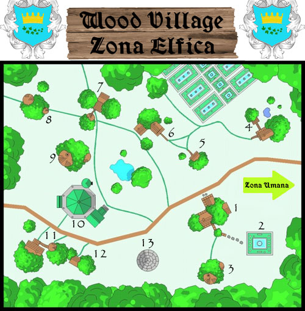

Situato al confine nord del
Regno di Tarsis,
all'interno del margine sud della Grande
Foresta Nordica,
Wood Village
rappresenta un piccolo avamposto sicuramente di rilevanza superiore rispetto
alle sue modeste dimensioni. La particolarità di questa comunità è quella di
essere divisa in due zone. Questa separazione è dovuta alla presenza di una
comunità di elfi stanziatasi proprio nella parte sud della
Grande Foresta Nordica,
all'interno del confine del Regno di
Tarsis. Questa comunità elfica non è però
preesistente al Regno di Tarsis.
Dopo la fondazione del Regno di Tarsis,
infatti, gli elfi presenti nel Regno (inizialmente viaggiatori, esploratori,
commercianti ed avventurieri provenienti principalmente dalla
Foresta Libera Loderin)
aumentarono sensibilmente il loro numero ed una certa parte di questi decise di risiedere
stabilmente in questa zona a prevalenza umana. Nel corso degli ultimi due
secoli, tale fenomeno portò alla creazione di una vera
e propria comunità elfica all'interno del
Regno di Tarsis. Gli elfi insediati in
questa zona, infatti, nonostante avessero sempre amato viaggiare in ogni parte del Regno, non
abbandonarono mai il proprio amore per la natura e le foreste né furono
in grado di inserirsi completamente all'interno del tessuto sociale umano.
Anche nel Regno di Tarsis,
infatti, l'enorme differenza razziale tra umani ed elfi ha mantenuto vivo, da un lato, quel senso di superiorità che ogni
elfo, anche il più buono d'animo, prova nei confronti degli umani e, dall'altro,
quella naturale diffidenza che gli umani hanno sempre provato nei confronti
degli elfi. Tale fenomeno, presente soprattutto fra le classi povere e poco
istruite, ignoranti della storia e della tradizione elfica, ha in un certo senso
agevolato l'isolamento della popolazione elfica che si è conseguentemente stanziata
all'interno della Grande Foresta Nordica
per poter rispettare e mantenere vive le proprie tradizioni in un luogo
adeguatamente lontano dall'ingerenza umana. Deve osservarsi, però, che il numero
esiguo di elfi presenti nel Regno ha sempre convissuto in pace con la netta
maggioranza umana e le istituzioni politiche hanno saputo sfruttare la presenza
elfica nel Regno trasformandola in una valida risorsa. Per tale motivo, il
Regno di Tarsis
ha permesso la creazione della comunità autonoma di elfi di
Wood Village.
Il villaggio di Wood Village
è stato, conseguentemente, diviso in due zone. La zona umana, situata al margine
meridionale della Grande Foresta Nordica,
gestita ed amministrata come ogni altro insediamento umano del Regno e la zona
elfica situata leggermente più a nord, all'interno della foresta ad un giorno di
viaggio a piedi dalla zona sud. Ovviamente, tutti gli elfi di
Wood Village
sono considerati a pieno titolo cittadini del
Regno di Tarsis
di cui rispettano intermente le leggi e le istituzioni. Alla comunità elfica, però,
è stata concessa, attraverso la legislazione reale, una certa autonomia con la
previsione dei seguenti privilegi:
- La zona elfica di
Wood Village
non è amministrata da un governatore di nomina reale ma dal Consiglio della
Comunità Elfica. L'autonomia amministrativa della comunità elfica si
sostanzia proprio nel governo locale della zona elfica che, a differenza delle
altre comunità locali del Regno, non è esercitato da un governatore nominato da
Sua Maestà il Re di Tarsis (né da un altro nobile territoriale minore) bensì
direttamente dagli elfi attraverso il Consiglio della Comunità. Al Consiglio
spettano tutte le prerogative normalmente spettanti al governatore di una
comunità locale nonché gli ulteriori poteri previsti dalla legge reale.
- Nessun cittadino del
Regno di Tarsis
può risiedere stabilmente, né possedere terre o immobili all'interno della zona
elfica senza autorizzazione concessa dal Consiglio della Comunità Elfica.
Questo privilegio rappresenta il maggiore elemento di autonomia della comunità
elfica in quanto il Consiglio è solito dare la possibilità di risiedere nella
zona elfica solo ad elfi, più raramente a mezzi elfi ed ad amici del popolo
elfico, in casi estremamente rari a rappresentanti di altre razze che non
abbiano acquisito il titolo di amici del popolo elfico.
- Nessun cittadino o straniero, che non sia ivi residente,
può recarsi nella zona elfica di
Wood Village
senza lo specifico permesso di visita rilasciato secondo le modalità scelte dal Consiglio della
Comunità Elfica. Gli elfi di
Wood Village
hanno effettuato notevoli pressioni sul Regno per ottenere questo importante
privilegio. Limitare la possibilità di spostarsi nel Regno ai cittadini è stata
una questione a lungo discussa, alla fine è però prevalsa l'opinione che, senza
questo privilegio, continue visite nella comunità elfica di mercanti,
avventurieri, vagabondi ed anche di meri viaggiatori incuriositi dal leggendario
popolo elfico avrebbe finito per ledere la dignità di quest'ultimo
rappresentando un'ingerenza intollerabile. Per tale motivo, per potersi recare
nella zona elfica di
Wood Village
senza infrangere la legge reale occorre munirsi di regolare permesso di visita
rilasciato presso la sede del governatorato della zona umana di
Wood Village. Presso tale struttura vi è un
ufficio dove lavora un delegato del Consiglio della Comunità Elfica con il
titolo di Maestro delle Visite. Costui rilascia gratuitamente il permesso di
visita a chi ne fa richiesta adducendo un qualsiasi motivo valido. Il permesso è
gratuito e tutte le spese dell'ufficio sono a carico del Consiglio della
Comunità Elfica. Il permesso è rilasciato fondamentalmente per incontrare
residenti della comunità elfica o per recarsi presso il Tempio di Arlinir. Per
garantire la serenità della loro comunità, infatti, gli elfi preferiscono
effettuare i propri scambi commerciali presso la zona umana di
Wood Village
dove il Consiglio della Comunità Elfica ha costruito
ed acquistato vari immobili proprio per adibirli a centri per il commercio. Il
permesso consiste in una piccola pergamena con su indicati i dati del
richiedente ed il motivo della vista. In alcuni casi il permesso è rilasciato
permanentemente quando il visitatore è conosciuto dagli elfi e per motivi di
lavoro o di amicizia si reca costantemente nella zona elfica.
- Nella zona elfica della
Grande Foresta Nordica
è proibito esercitare legnatico ed attività venatoria senza il permesso concesso
dal Consiglio della Comunità Elfica ed in ogni caso mai oltre i limiti in esso
previsti. Se si tiene presente che una porzione
considerevole di quella parte della
Grande Foresta Nordica che si trova
all'interno del confine del Regno di
Tarsis è stata inserita nella zona elfica
di Wood Village
può evidenziarsi il rilevante vantaggio economico che
consegue a questo privilegio.
- La sicurezza all'interno della zona elfica è
amministrata unicamente dalla Milizia Elfica di Wood Village, la Gendermeria
Reale può intervenire nella zona elfica solo su richiesta diretta del
Consiglio della Comunità Elfica.
Questo privilegio è stato ritenuto necessario per evitare continue ingerenze da
parte degli umani negli affari quotidiani degli elfi. Del resto, l'esiguità dei
comportamenti criminali all'interno della comunità degli elfi, ha reso possibile
l'attuazione concreta di tale privilegio. Si noti, però, che tale privilegio si
estende solo all'ambito della sicurezza e non a quello dell'amministrazione
della giustizia. I giudici del Regno sono, infatti, sempre competenti a
giudicare le violazioni ed i crimini commessi all'interno della zona elfica
anche se da elfi in danno ad altri elfi.
- Qualora si verifichi una lite di tipo civilistico tra
due o più elfi residenti nella zona elfica, con il consenso di tutte le parti,
la stessa potrà essere decisa dal
Consiglio della Comunità Elfica.
Questo privilegio rappresenta l'unica deroga alla giurisdizione presente nella
zona elfica. La decisione del Consiglio sarà ritenuta come la decisione di un
giudice reale di primo grado. Di conseguenza, avverso alla stessa potranno
esperirsi i normali mezzi di gravame. Nonostante tale privilegio possa essere
utilizzato solo con il consenso di tutte le parti, deve osservarsi, però, che
storicamente gli elfi non solo hanno quasi sempre prestato il consenso affinché
le loro liti fossero decise dal Consiglio della Comunità ma hanno assai
raramente impugnato le decisioni del Consiglio.
Nonostante la zona elfica di Wood Village accolga la quasi totalità degli elfi residenti nel Regno di Tarsis, il numero di abitanti è abbastanza esiguo. Ciò è dovuto a due ordini di ragioni: la prima può rinvenirsi nella prolificità relativamente ridotta della razza elfica; la seconda nella circostanza che, comunque, gli elfi che decidono di abbandonare la foresta elfica corrispondono ad una percentuale esigua della popolazione laddove un numero consistente degli elfi nati fuori dalla foresta elfica spesso decide di farci ritorno definitivamente. Non deve sorprendere, quindi, che nella zona elfica di Wood Village risiedano circa un migliaio di abitanti così distribuiti:
| Tipo di residente | Percentuale sul totale | Numero complessivo |
| Elfi Alti | 78 % | 800 circa |
| Mezzi Elfi | 12 % | 125 circa |
| Elfi Silvani | 7% | 70 circa |
| Amici del Popolo Elfico | 2% | 20 circa |
| Elfi Grigi ed esterni | 1% | 10 circa |
Ovviamente, occorre tenere presente che non tutti gli elfi residenti nel Regno di Tarsis vivono nella zona elfica di Wood Village. In tutto il territorio del Regno, infatti, vi sono elfi stabiliti per le più varie ragioni (spesso per motivi connessi alla loro professione, si pensi ai maghi accademici ed agli agenti diplomatici) ma il loro numero complessivo non supera le 500 unità. I mezzi elfi, invece, sentendo meno il legame con la foresta e le tradizioni elfiche sono da sempre stati più propensi all'integrazione, per tale motivo se ne possono contare circa 3000 residenti nel resto del territorio del Regno di Tarsis. Nonostante ciò, però, può affermarsi che in tutto il Regno di Tarsis non esiste, oltre a Wood Village, nessun altra aggregazione elfica di rilievo.
La zona elfica di Wood Village può distinguersi in due parti. Il centro del villaggio, dove si trovano le strutture istituzionali e commerciali, e la zona di foresta nella quale sono sparse le dimore degli elfi ad una certa distanza l'una dall'altra. Gli elfi, infatti, amano vivere soli o in piccoli gruppi familiari a contatto con la natura. Per questo motivo le case elfiche sono spesso situate a non meno di 30 minuti di cammino l'una dall'altra. Si noti, però, che gli elfi, nonostante amino vivere immersi nella natura, conservano un fortissimo senso della comunità frequentando periodicamente i propri luoghi comuni di aggregazione sparsi in tutta la foresta e presenti anche al centro del villaggio. In tali luoghi (capanni, giardini, luoghi per falò, ecc...) costoro amano incontrarsi al fine di parlare dei loro problemi personali e di quelli della loro comunità.
1) Il Tempio di Arlinir di Wood Village
Il Tempio di Wood Village
(zona elfica) rappresenta la sede principale del culto di Arlinir nel Regno di
Tarsis. Per tale motivo, nonostante non sia di grandi dimensioni, si tratta di
un tempio conosciuto ed importante specie per le relazioni tra le due principali
divinità della Fratellanza della Luce, Tanatos ed Arlinir.
Presenza clericale al Tempio (anno 195 p.n.):
Alta Sacerdotessa Alisia ♀ (7 a.n.) 7° livello di esperienza (amministratrice del tempio)
Alisia è l'amata Alta
Sacerdotessa che amministra il tempio di Arlinir. Si tratta di un'elfa
abbastanza giovane per l'importante posizione occupata. Figlia di Elindor
Silvertree, ambasciatore (ancora in carica) della Foresta Libera Loderin
presso il Regno di Tarsis, Alisia è nata a Tarsis e si è stabilita nella
zona elfica di Wood Village in giovane età (poco dopo il riconoscimento
dell'autonomia degli elfi stanziatisi nella zona). Dopo essere divenuta chierica
devota alla Dea Velata, Alisia ha fatto esperienza come guida spirituale e
curatrice di un gruppo di avventurieri elfi e mezzi elfi. Ha in questo
modo raggiunto, quindi, l'esperienza necessaria a prendere le redini del tempio
di Arlinir della comunità in un tempo relativamente breve. A quel punto,
appagata dalla posizione raggiunta, ha deciso di abbandonare le pericolose
missioni per dedicarsi alla cura della propria comunità. Dall'animo sensibile e
dal temperamento dolce, Alisia è molto amata dalla comunità elfica alla cura
della quale si dedica completamente. La sua presenza al tempio è, infatti,
decisamente costante (50% di trovarla, ripetere il tiro
ogni 1d10 giorni). Quando non è impegnata nei riti e nelle visite alle dimore elfiche Alisia impegna il suo tempo curando le piante del tempio e producendo
incantamenti minori per i fedeli nonché pergamene magiche clericali. Al suo
carattere gioioso e dolce si contrappone, però, una personalità non avvezza alla
politica ed al comando, doti importanti per l'amministrazione di un tempio
situato in un Regno dove predominante risulta essere un'altra divinità e dove
gli elfi rappresentano una minoranza a volte sfruttata. Alisia, infatti, spesso
preferisce non occuparsi delle questioni politiche locali ed acconsentire alle
richieste avanzate dalle istituzioni del Regno di Tarsis e dalla Santa Chiesa
Tanatiana specie quando queste divengono pressanti. Alcuni criticano questo suo
carattere mansueto, anche se può affermarsi che la sua arrendevolezza ha spesso
evitato contrapposizioni garantendo il "quieto vivere" della comunità.
Alta Sacerdote Ardamir ♂ 6° livello di
esperienza
Alta Sacerdotessa Falea ♀ 5° livello di esperienza
Foglia d'oro di Arlinir: Ledrin ♂ 4° livello di esperienza, Selin ♀ 3° livello di esperienza, Arendil ♂ 3° livello di esperienza, Glenuir ♂ 3° livello di esperienza, Teris ♂ 2° livello di esperienza, Gilesia 2° livello di esperienza, Alinia ♀ 2° livello di esperienza, Felomir ♂ 2° livello di esperienza, Taris ♂ 1° livello di esperienza, Drein ♂ 1° livello di esperienza, Koris ♂ 1° livello di esperienza, Azelia ♀ 1° livello di esperienza, Milinir ♂ 1° livello di esperienza.
Ricevere incantesimi clericali al Tempio:
Chi si reca al tempio di Arlinir
per ricevere incantesimi clericali dei chierici di Arlinir può usufruire delle
seguente magie (si consideri che, quasi sempre, non sono presenti tutti i
chierici ma solo una piccola parte, inoltre c'è generalmente una lista d'attesa
per cui può essere necessario attendere. Si noti che se appare un risultato di
attesa al termine dell'attesa sarà disponibile il numero massimo di magie
possibili nella tabella per quel determinato livello (ed il giorno successivo
dovrà ripetersi il tiro). Tranne che per il risultato di attesa il tiro va
ripetuto ogni giorno. Al tiro devono applicarsi i seguenti modificatori:
La magia è richiesta da un fedele di Arlinir o da
un Amico del Popolo Elfico : nessun modificatore
La magia è richiesta da un elfo od un 1/2 elfo non fedele di Arlinir :
-1 al risultato
La magia è richiesta da un non elfo fedele di un culto della Fratellanza della
Luce : -2 al risultato
La magia è richiesta da un non elfo fedele di un culto delle Divinità Neutrali
oppure da un ateo : -3 al risultato
La magia è richiesta per un motivo urgente di vita o di morte :
+1 al risultato
Magie clericali di primo livello di
potere generale disponibili (1d20):
1 Nessuna (attesa 1d2+1 giorni),
2-3 Nessuna (attesa 1 giorno),
4-6 un incantesimo,
7-10 due incantesimi,
11-15 tre incantesimi,
16-18 quattro incantesimi,
19-20 cinque incantesimi.
Magie clericali di primo livello di
potere speciale (1d20):
1 Nessuna (attesa 1d2+1 giorni),
2-4 Nessuna (attesa 1 giorno), 5-7
un incantesimo, 8-11 due incantesimi,
12-16 tre incantesimi,
17-19 quattro incantesimi,
20 cinque incantesimi.
Magie clericali di secondo livello
di potere generale (1d20):
1-2 Nessuna (attesa 1d2+1 giorni),
3-5 Nessuna (attesa 1 giorno),
6-9 un incantesimo,
10-15 due incantesimi,
16-18 tre incantesimi,
19-20 quattro incantesimi.
Magie clericali di secondo livello
di potere speciale (1d20):
1-2 Nessuna (attesa 1d2+1 giorni),
3-6
Nessuna (attesa 1 giorno), 7-10 un
incantesimo, 11-16
due incantesimi, 17-19 tre incantesimi,
20 quattro incantesimi.
Magie clericali di terzo livello di
potere generale [guarigione
con il tocco delle mani] (1d20):
1-2 Nessuna (attesa 1d6+4 giorni),
3-5 Nessuna (attesa 1d2+1 giorni),
6-9 Nessuna (attesa 1 giorno),
10-14 un incantesimo
[un tocco guarente]
,
15-18 due incantesimi
[un tocco guarente],
19-20 tre incantesimi
[un tocco guarente].
Magie clericali di terzo livello di
potere speciale (1d20):
1-3 Nessuna (attesa 1d6+4 giorni),
4-7 Nessuna (attesa 1d2+1 giorni),
8-12 Nessuna (attesa 1 giorno),
13-17 un incantesimo,
18-19 due incantesimi,
20 tre incantesimi.
Magie clericali di quarto livello
di potere generale (1d20):
1 Nessuna (attesa 1d12+8 giorni)
2-4 Nessuna (attesa 1d6+4 giorni),
5-8 Nessuna (attesa 1d2+1 giorni),
9-13 Nessuna (attesa 1 giorno),
14-17 un incantesimo,
18-19 due incantesimi,
20 tre incantesimi.
Acquistare oggetti al Tempio:
Presso il Tempio di Arlinir possono essere acquistati diversi oggetti.
I chierici del Tempio producono, su richiesta, alcuni incantamenti minori che i fedeli e gli amici del popolo elfico possono acquistare. Il costo degli oggetti deve essere versato al Tempio interamente ed in forma anticipata (se l'acquirente fornisce l'oggetto da incantare di qualità pari o superiore a quello normalmente fornito dal Tempio costui potrà pagare il solo costo dell'incantamento, oggetti di qualità inferiore non sono accettati). Al termine del periodo di attesa l'acquirente può recarsi al Tempio a ritirare il proprio oggetto magico.
Arrows
of Elven Accurancy (12 frecce da caccia superbe):
costo 515 corone, periodo di attesa 60+(1d6*10) giorni
Arrows of Elven Accurancy
(8 frecce da guerra superbe): costo 530 corone, periodo di
attesa 60+(1d6*10) giorni
Blade of Elven Agility
(short sword superba): costo 1650 corone, periodo di attesa
150+(1d12+3*10) giorni
Blade of Elven Agility
(long sword superba): costo 1725 corone, periodo di attesa
150+(1d12+3*10) giorni
Lesser Leaf of Life:
costo 1050 corone, periodo di attesa 90+(1d10*10) giorni
Leaf of Life:
costo 1550 corone, periodo di attesa 150+(1d12+3*10) giorni
Greater Leaf of Life:
costo 3050 corone, periodo di attesa 180+(1d20*10) giorni
Ring of Moon Light
(pietra di luna da 625 g.p.): costo 2200 corone, periodo di attesa
150+(1d12+3*10) giorni
COMPONENTI MATERIALI CLERICALI
Presso il Tempio di Arlinir, esclusivamente i chierici della divinità, possono rifornirsi acquistando i componenti materiali dei propri incantesimi. Possono trovare facilmente i componenti per le magie di 1°-3° livello di potere, sia generale che speciale, fatta eccezione per le ossa di drago necessarie al lancio della magia Augury. Tale componente materiale ed i componenti materiali per le magie di livello di potere superiore al terzo potranno unicamente essere ordinati presso il Tempio il quale li farà pervenire dalla foresta elfica. I componenti così ordinati dovranno essere pagati anticipatamente con l'aggiunta di 50 corone a parziale copertura dei costi di trasporto e giungeranno presso il Tempio 3d12+14 giorni dall'avvenuta richiesta.
ACQUA SANTA DI ARLINIR
Presso il Tempio di Arlinir, tutti
i fedeli della divinità, possono acquistare acqua santa. Se muniti di uno dei
contenitori utilizzati dal tempio costoro possono riempirlo al costo di 25
corone. Altrimenti devono acquistarlo. I contenitori utilizzati dal Tempio sono
i seguenti:
Fiaschetta in rame con tappo a vite
decorata con inciso, in bassorilievo, una foglia d'albero. Peso 1 lb., costo 1
corona.
Fiaschetta in argento con tappo a vite decorata con
inciso, in bassorilievo, una foglia d'albero. Peso 1 lb., costo 5 corone.
Ampolla di vetro con tappo di sughero e cera fusa
(non riutilizzabile). Peso 1 lb., costo 10 corone.
2) Il Giardino delle Ninfee
Annesso al Tempio di Arlinir presso Wood Village
(zona elfica) si trova lo splendido Giardino delle Ninfee. Si tratta del
"Giardino di Arlinir" del Tempio, un luogo rilassante e ricco di piante e fiori
dal quale proviene costantemente un odore soave. I chierici del tempio si
prendono cura del giardino e delle vasche con le piante acquatiche dove nuotano
pesci d'acqua dolce. Presso il Giardino delle Ninfee, inoltre, sono piantate le
"Adoratrici della Luna", le splendide piante
coltivate dai chierici di Arlinir. Durante l'ultima
decade del mese di Croon, dopo la fine della festività della "Decade
della Luna", il Tempio pone in vendita presso il giardino i frutti delle
Adoratrici della Luna. Tali frutti possono essere acquistati esclusivamente in
questa decade.
Goccia di Luna: Un personaggio può tirare (1d20)
per verificare quante Goccia di Luna sono disponibili:
1-5 nessuna,
6-9 una Goccia di Luna,
10-15 due Gocce di Luna,
16-18 tre Gocce di Luna,
19-20 quattro Gocce di Luna. Per
verificare lo specifico tipo di frutto consultare la tabella nei
Riti di Arlinir. Le Goccie di Luna sono
vendute a 100 corone l'una.
Bacio di Arlinir: Un personaggio può tirare
(1d100) per verificare se vi è un Bacio di
Arlinir disponibile per la vendita avendo il 20% di possibilità di reperirlo. Se
presente, il Bacio di Arlinir è venduto a 2250 corone. Per verificare gli
effetti magici del frutto consultare i
Riti di Arlinir.
3) Residenza della Foglia Sacra
Facente parte sempre del complesso del Tempio di Arlinir questa struttura in
legno circolare alta 12 metri rappresenta la residenza utilizzata dai chierici
di Arlinir. L'edificio ospita, nei suoi quattro piani, le camere di tutti i
chierici del Tempio di Arlinir. Ogni chierico del Tempio, infatti, ha diritto al
vitto ed all'alloggio gratuito quando risiede presso il Tempio di Wood Village
(zona elfica). In particolare ogni chierico di Arlinir possiede una camera
adeguata al proprio rango e livello. Tutte le spese sono a carico del Tempio di
Arlinir.